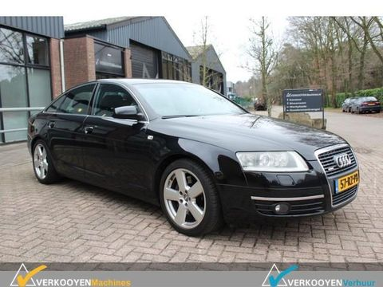

Audi A6
 Audi A6 je automobil iz gornje srednje klase nemačke marke Audi i proizvodi se od 1994. godine.
Audi A6 je automobil iz gornje srednje klase nemačke marke Audi i proizvodi se od 1994. godine.
Audi A6 C4
Audi A6 C4 se proizvodio od 1994. do 1997. Naslednik je Audija 100.
 Izmena u odnosu na Audi 100 temeljila se na promeni prednjih i zadnjih svetala, pokazivača smera, promena prednje haube, blatobrana i oba branika, lajsni na vratima i krovu. Neki modeli imali su i hrom lajsne. Unutrašnjost nije bila značajno promenjena (promenjen je volan te je analogni brojač kilometara zamenjen digitalnim).Sve generacije Audi A6 automobila nudile su i opciju „quattro“ pogona na sva 4 točka modeli koji su bili dostupni je „limuzina“ i „Avant“ varijanta.
Izmena u odnosu na Audi 100 temeljila se na promeni prednjih i zadnjih svetala, pokazivača smera, promena prednje haube, blatobrana i oba branika, lajsni na vratima i krovu. Neki modeli imali su i hrom lajsne. Unutrašnjost nije bila značajno promenjena (promenjen je volan te je analogni brojač kilometara zamenjen digitalnim).Sve generacije Audi A6 automobila nudile su i opciju „quattro“ pogona na sva 4 točka modeli koji su bili dostupni je „limuzina“ i „Avant“ varijanta.
Benzinski motori sa 4 redna cilindra snage su od 101 do 193 konjskih snaga, dok su motori sa 5 rednih cilindara snage 133 do čak 326 konjskih snaga. Što se tiče dizel motora, ponuda je nešto siromašnija u odnosu na benzince, tako da su motori sa 4 cilindra razvijali snagu od 90 konjskih snaga, a sa 5 cilindara 115 do 140 KS. Potrošnja goriva je od 8 – 15 l /100 km, naravno, zavisno o snazi motora.Neka prosečna potrošnja Audija A6 C4 uz kombinaciju grada/otvoren put je nekih desetak litara na sto kilometara.
 Dodatna oprema za A6 uključuje 16“ aluminijumske felne, 8 zvučnika sa CD playerom, klimu, kožna sedišta, prednja svetla za maglu, tempomat, krovni prozor, centralno zaključavanje (na kompresiju), električno podešavanje retrovizora, električno spuštanje svih četiri stakala te blokadu.
Dodatna oprema za A6 uključuje 16“ aluminijumske felne, 8 zvučnika sa CD playerom, klimu, kožna sedišta, prednja svetla za maglu, tempomat, krovni prozor, centralno zaključavanje (na kompresiju), električno podešavanje retrovizora, električno spuštanje svih četiri stakala te blokadu.
Od sigurnosne opreme Audi A6 C4 je opremljen vazdušni jastukom na vozačevom mestu, te ABS-om, a od 1996. godine vazdušni jastuk na suvozačevom mestu postao je standard. Takođe, ima i prekidač kojim se onesposobljava spuštanje zadnjih stakala i vrata.1997. Audi je povukao iz prodaje modele iz 1995. i 1996. godine zbog problema sa statičkim elektricitetom koji u nekim slučajevima uzrokuje aktiviranje vozačevog zračnog jastuka.Od ostalih problema ovog modela, ističu se problemi sa pokazivačem goriva koji pokazuje krivo očitanje zbog labave žice uzemljenja na levom zadnjem svetlu.
Audi A6 C5
 Audi A6 C5 prvi je Audijev model koji se ubraja u višu srednju klasu i tako postaje konkurent mercedesovoj E-klasi odnosno BMW-oj petici.Četiri zračna jastuka, ABS, ESP (od kraja 2000. godine) klimaautomatik i električni podizači stakla dio su serijske opreme.. 1999. godine na tržištu se pojavio A6 allroad sa pogonom na sva četiri kotača „quattro“. 2001. godine A6 C5 podvrgnut je faceliftu te je ujedno i dobio nove motore.
Audi A6 C5 prvi je Audijev model koji se ubraja u višu srednju klasu i tako postaje konkurent mercedesovoj E-klasi odnosno BMW-oj petici.Četiri zračna jastuka, ABS, ESP (od kraja 2000. godine) klimaautomatik i električni podizači stakla dio su serijske opreme.. 1999. godine na tržištu se pojavio A6 allroad sa pogonom na sva četiri kotača „quattro“. 2001. godine A6 C5 podvrgnut je faceliftu te je ujedno i dobio nove motore.
A6 C5 svojim putnicima nudi mnogo prostora to vrijedi i za limuzinu i za „Avant“ verziju karoserije, allroad model ima nešto manje prostora. Osim toga u svim modelima postoji mogućnost spuštanja zadnjeg sjedišta što povećava zapremninu prtljažnika. Podvozje nije zadovoljavajuće, straga je tvrdo i to se osobito očituje na neravnim podlogama. Isto tako česti su problemi sa sponama prednjeg ovjesa te sa vilicama koje se često već nakon 10 000 km moraju zamijeniti.Zahvaljujući u potpunosti pocinčanoj karoseriji ne bi trebalo biti problema s hrđom osim kod auta s oštećenom karoserijom koja nije kvalitetno popravljena.Unutrašnjost je kvalitetno izrađena osim što ima par optičkih mana Softlack na ručkama vrata i prekidačima za svijetlo često već nakon kratkog vremena popuca.
 Ponuda motora je izrazito mnogobrojna. No kod mnogih treba obratiti pažnju na intervale izmjene zupčastog remena, kilometraža ne bi trebalo da prelazi više od 60 000 km, a ako nije postignuta ta kilometraža ipak bi ga valjalo preventivno zamijeniti svakih 6 godina jer pucanje zupčastog remena može dovesti do kvara motora. Benzinski motori kreću s četverocilindričnim snage 125 KS, sežu preko šesterocilindričnog snage 165 KS do 250 KS pa sve do osmocilndričnog snage od 300 KS. Osim toga još se tu nalaze i modeli „S“ i „RS“ snage sve do 480 KS. Valja obratiti pozornost na Lambda sondu. Dizelski motori kreću s četverocilindričnim od 110 KS sve do šesterocilindričnih koji sežu do 180 KS sve TDI motori. Većinom svi dizelski rabljeni motori imaju više od 300 000 km, pa nije baš preporučljiva njihova kupnja. Trebalo bi obratiti pažnju na brizgaljke motora i već spomenuti zupčasti remen. Isto tako kod turbopunjača se mogu pojaviti problemi.
Ponuda motora je izrazito mnogobrojna. No kod mnogih treba obratiti pažnju na intervale izmjene zupčastog remena, kilometraža ne bi trebalo da prelazi više od 60 000 km, a ako nije postignuta ta kilometraža ipak bi ga valjalo preventivno zamijeniti svakih 6 godina jer pucanje zupčastog remena može dovesti do kvara motora. Benzinski motori kreću s četverocilindričnim snage 125 KS, sežu preko šesterocilindričnog snage 165 KS do 250 KS pa sve do osmocilndričnog snage od 300 KS. Osim toga još se tu nalaze i modeli „S“ i „RS“ snage sve do 480 KS. Valja obratiti pozornost na Lambda sondu. Dizelski motori kreću s četverocilindričnim od 110 KS sve do šesterocilindričnih koji sežu do 180 KS sve TDI motori. Većinom svi dizelski rabljeni motori imaju više od 300 000 km, pa nije baš preporučljiva njihova kupnja. Trebalo bi obratiti pažnju na brizgaljke motora i već spomenuti zupčasti remen. Isto tako kod turbopunjača se mogu pojaviti problemi.
Audijev A6 C5 još i danas dobro izgleda na cesti međutim obavezno treba obratiti pažnju na gore navedene mane jer popravak istih može biti veoma skup i tako kupnja ovog rabljenog vozila neisplativa.Audijev A6 C5 još i danas dobro izgleda na cesti međutim obavezno treba obratiti pažnju na gore navedene mane jer popravak istih može biti veoma skup i tako kupnja ovog rabljenog vozila neisplativa.
Audi A6 C6
Uspeh sa prethodnom generacijom Audi A6 takođe je potvrdio još jedna treća generacija Audi A6 C6. Predstavljen je 2004. Dizajn eksterijera i enterijera je od poznatog i priznatog dizajnera – Walter de Silva. Audi A6 C6 definitivno aludira na svog prethodnika, ali je malo duži i ima modifikovan prednji i zadnji deo. Unutra se našao novi sistem Multi Media Interface skraćeno MMI, ili – sistem za kontrolu i zabavu. Novi je i 6 stepeni automatski menjač Tiptronic. 2005. Audi A6 dobila prestižnu nagradu „World Car of the Year“. Postoje tri tipa karoserije – sedan , karavan (Avant iz 2005. godine) i Allroad iz 2006. Nakon blagog fejsliftinga 2008. Audija A6 C6, zadnji deo automobila je mnogo sličan sa manjim modelom Audijem A4, takođe je dobio opciona prednja LED svetla.
Audi A6 ima prostranu unutrašnjost, dovoljno velika da primi pet odraslih osoba. Klima uređaj i elektronski podizači su standardni , a Audi A6 dolazi sa elektronskom parkirnom kočnicom koja se aktivira preko prekidača na centralnoj konzoli. Svi motori u ponudi su rafinirani i prave minimalni doprinos buci u unutrašnjosti. Za putnike na zadnjim sedištima ima pristojan noge i za glavu i sedišta daju lepu ravnotežu meke udobnosti i dobre podrške.
Od početka svi motori Audi A6 C6 zadovoljavaju Euro 4 normu, a nakon facelifta Euro 5 normu. Iz tog razloga Audi A6 C6 ostat će upamćen kao automobil sa širokom paletom motora. Ponudu menjača činili su 6 manuelni , Multitronic i Tiptronic. Kod benzinaca u prvim godinama proizvodnje javljao se problem s bobinama. Kod TDI motora može doći do pucanja glave cilindara, takođe se javljaju problemi sa turbo punjačem. Valjalo bi obratiti pažnju i na creva kočionog sistema, te gumene ležajeve prednje osovine.
Benzinski motori kod Audi A6 C6 generišu znatno niže troškove održavanja . Dok osnova verzija 2.0 TFSI ima komplikovanu strukturu, ali je jednostavni 2.4 V6 motor sa direktnim ubrizgavanjem kojem možete dodati i TNG. Takođe je moguće i 4.2 V8 motoru dodati gas , ali samo da nema oznaka FSI ( 4.2 FSI je potpuno drugačiji motor) .
Ostale benzinske verzije Audi -ja A6 imaju direktno ubrizgavanje goriva i TNG neće odgovarati. Napomena: Jedinice 3.2 i 4.2 FSI imaju vrlo slične probleme sa pogonskim lancem kao dizel 3.0 TDI.
 Benzinci imaju znatno niže troškove održavanja . 2.4 i 4.2 motori koriste multipoint ubrizgavanje goriva koje je prilično jednostavno za održavanje. Ostali motori imaju direktno ubrizgavanje goriva u komoru za sagorevanje i suočavaju se sa taloženjem naslaga ugljenika na ventilima . Motori 3.2 i 4.2 FSI kroz slične probleme sa pogonskim lancem kao i 3.0 TDI. 2.0 TFSI – benzinski motor sa 4 cilindra. U drugim Vw automobila dostiže mnogo veću snagu, kod Audi A6 C6 deluje kao bazni model. Trajan, prilično pouzdan. 2.4 – najjednostavniji motor, nema direktnim ubrizgavanje, možete mu se ugraditi gas bez problema. Motor ima novi dizajn, od prethodne generacije je samo delimično preuzeo aluminijumski blok motora . Potpuno nova elektronika motora, sa parom bregastih vratila , ali koji upravljaju sa 30 ventila, umesto samo 24 ventila. 2.8 FSI – Vrlo moderan motor sa direktnim ubrizgavanjem, variabilno upravljane ventilima i lanac kao pogon. 3.0 TFSI – Od 2008. ispod haube , dolazi veoma moćni šestocilindrični turbo benzinac sa direktnim ubrizgavanjem goriva 3.0 TFSI sa snagom od 213 KW i obrtnim momentom od 420 Nm , koji je dostupan od 2500 do 4850 o/min. Kod Audi A6 dinamika ovog motora je zaista odlična, kao i odgovor na pedalu gasa.
Benzinci imaju znatno niže troškove održavanja . 2.4 i 4.2 motori koriste multipoint ubrizgavanje goriva koje je prilično jednostavno za održavanje. Ostali motori imaju direktno ubrizgavanje goriva u komoru za sagorevanje i suočavaju se sa taloženjem naslaga ugljenika na ventilima . Motori 3.2 i 4.2 FSI kroz slične probleme sa pogonskim lancem kao i 3.0 TDI. 2.0 TFSI – benzinski motor sa 4 cilindra. U drugim Vw automobila dostiže mnogo veću snagu, kod Audi A6 C6 deluje kao bazni model. Trajan, prilično pouzdan. 2.4 – najjednostavniji motor, nema direktnim ubrizgavanje, možete mu se ugraditi gas bez problema. Motor ima novi dizajn, od prethodne generacije je samo delimično preuzeo aluminijumski blok motora . Potpuno nova elektronika motora, sa parom bregastih vratila , ali koji upravljaju sa 30 ventila, umesto samo 24 ventila. 2.8 FSI – Vrlo moderan motor sa direktnim ubrizgavanjem, variabilno upravljane ventilima i lanac kao pogon. 3.0 TFSI – Od 2008. ispod haube , dolazi veoma moćni šestocilindrični turbo benzinac sa direktnim ubrizgavanjem goriva 3.0 TFSI sa snagom od 213 KW i obrtnim momentom od 420 Nm , koji je dostupan od 2500 do 4850 o/min. Kod Audi A6 dinamika ovog motora je zaista odlična, kao i odgovor na pedalu gasa.
Audi A6 C7
 Protiv štutgartske E klase i minhenske serije pet, Audi šalje novu, sedmu, generaciju modela A6. Novi Audi A6 je kraći i lakši od svog prethodnika, a za njim se osvrću i vlasnici za dve klase skupljih limuzina. Audi A6 je tradicionalni predstavnik više srednje klase. Istorija ovog modela (uključujući i prethodnika serije Audi 100), seže od 1968. godine, a ovogodišnji novitet je sedma generacija po redu. Dolaskom novog A6, završava se generacijska smena Audijevih sedana, koja je započeta novim A4, a prošle godine nastavljena novim A8.
Protiv štutgartske E klase i minhenske serije pet, Audi šalje novu, sedmu, generaciju modela A6. Novi Audi A6 je kraći i lakši od svog prethodnika, a za njim se osvrću i vlasnici za dve klase skupljih limuzina. Audi A6 je tradicionalni predstavnik više srednje klase. Istorija ovog modela (uključujući i prethodnika serije Audi 100), seže od 1968. godine, a ovogodišnji novitet je sedma generacija po redu. Dolaskom novog A6, završava se generacijska smena Audijevih sedana, koja je započeta novim A4, a prošle godine nastavljena novim A8.
Novi Audi A6 je zadržao dimenzije prethodnika, sa nekoliko izuzetaka. Međuosovinsko rastojanje je povećano za 69 mm, na 2.912 mm, a dužina automobila, smanjena je za 12 mm, na 4.915 mm. U poređenju sa konkurencijom, Audi A6 je i dalje jedan od najvećih modela više srednje klase, koji dužinom prevazilazi oba nemačka rivala, a duži su samo Jaguar i Infiniti. Povećanjem za skoro 7 centimetara, A6 ima drugo najduže međuosovinsko rastojanje u klasi, odmah nakon BMW-a serije 5. Audi A6 može se pohvaliti i najvećim tragom točkova, koji na prednjoj osovini iznosi 1.627 mm (BMW 5 ima 1.600 mm, a Mercedes-Benz E 1.585 mm).
Motori Proširena je i ponuda sistema bezbednosti i asistencije vozaču, dok prednja sedišta mogu da se poruče sa funkcijama ventilacije i masaže. „Audi A6“ i „audi A6 avant“ su dostupni sa tri TFSI motora, od 190 KS do 333 KS, kao i sa pet TDI agregata u rasponu snage od 150 KS do 326 KS. Najsnažniji dizel motor dolazi u kombinaciji sa osmostepenim „tiptronik“ menjačem, dok svi ostali agregati koriste šestostepene ručne ili sedmostepene „S-tronik“ menjače.
 Inače, motori zadovoljavaju Euro 6 standard, pri čemu je emisija štetnih gasova smanjena za 22 odsto. Prema fabričkim podacima, „audi A6 2.0 TDI“ (150 KS) prosečno troši 4,2 litara, a „audi A6 1.8 TFSI“ (190 KS) tačno 5,7 litara.Sportska „S6“ verzija snagu dobija iz 4,0-litarskog TFSI V8 biturbo agregata sa 450 KS, pri čemu limuzina do „stotke“ ubrzava za 4,4 sekundi, a „avant“ za 4,6 sekundi.Standardna oprema „audija S6“ su stalni „kvatro“ pogon na svim točkovima i prilagodljivo vazdušno ogibljenje.
Inače, motori zadovoljavaju Euro 6 standard, pri čemu je emisija štetnih gasova smanjena za 22 odsto. Prema fabričkim podacima, „audi A6 2.0 TDI“ (150 KS) prosečno troši 4,2 litara, a „audi A6 1.8 TFSI“ (190 KS) tačno 5,7 litara.Sportska „S6“ verzija snagu dobija iz 4,0-litarskog TFSI V8 biturbo agregata sa 450 KS, pri čemu limuzina do „stotke“ ubrzava za 4,4 sekundi, a „avant“ za 4,6 sekundi.Standardna oprema „audija S6“ su stalni „kvatro“ pogon na svim točkovima i prilagodljivo vazdušno ogibljenje.